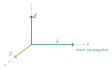
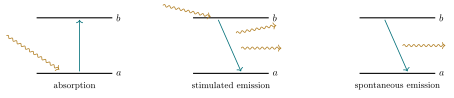
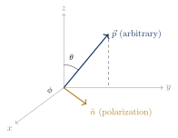

Download this chapter (PDF) Full notes (PDF)
37 Emission and Absorption of Radiation¶
37.1 The Radiation Field and the Dipole Approximation¶
Consider a plane electromagnetic wave
with the wave vector \(\vec k\) along \(y\), the electric field along \(z\) and the magnetic field along \(x\).

Two simplifications follow because the wavelength is much larger than the atom:
-
The spatial variation of \(\vec E\) does not matter on the scale of the atom, so \(\vec E\) is evaluated at the position of the atom (the dipole approximation).
-
The electric field plays the crucial role here, not the magnetic field.
We take \(\vec E=E_0\cos\omega t\,\hat e_3\), i.e. a wave polarized along \(z\).
Study Note
The magnetic force on an electron is smaller than the electric force by a factor \(v/c\sim\alpha\), and for optical wavelengths (\(\gtrsim10^3\) atomic radii) \(e^{i\vec k\cdot\vec r}\approx1\) across the atom. Corrections to the dipole approximation give magnetic dipole and electric quadrupole transitions, which are much weaker.
37.2 Hamiltonian of the Atom in the Field¶
For an atom with two levels \(|\psi_a\rangle,|\psi_b\rangle\) (\(E_b>E_a\), \(\hbar\omega_0=E_b-E_a\)) the time-dependent Hamiltonian is
and its matrix elements are
where \(p=q\langle\psi_b|z|\psi_a\rangle\) is the dipole moment (the dipole matrix element). The diagonal terms are zero.
Complete Solution (why the diagonal terms vanish)
\(\hat z\) is odd under parity and atomic stationary states have definite parity, so \(|\psi_a|^2\) is even and \(\langle\psi_a|z|\psi_a\rangle=\int z|\psi_a|^2d^3r=0\); the same holds for \(b\).
37.3 Absorption, Stimulated Emission and Spontaneous Emission¶
Section 31 gives, for the sinusoidal perturbation near resonance, with \(V_{ba}=-E_0p\):
-
Absorption: a photon is absorbed and the atom goes \(a\to b\) with probability \(P_{a\to b}\).
-
Stimulated emission: an incident photon induces \(b\to a\) and a second identical photon is emitted. By symmetry \(P_{b\to a}\) has the same form (with \(V_{ab}\)).
-
Spontaneous emission: the atom in \(b\) drops to \(a\) and emits a photon even with no field applied. It cannot come out of a classical-field calculation; it is obtained from Einstein’s argument below.

Study Note (factor 4)
The notebook first writes this probability with a prefactor \((2V_{ba}/\hbar)^2\) and a little later says “forget 4”. The prefactor consistent with Section 31 is \((V_{ba}/\hbar)^2=(pE_0/\hbar)^2\), and this is what is used below.
37.4 Incoherent Perturbation: Broadband Radiation¶
A thermal (incoherent) field contains many frequencies with random phases, so the transition probabilities for different frequencies add. The energy density of an electromagnetic wave is
With \(V_{ab}=qE_0\langle\psi_a|z|\psi_b\rangle=E_0p\) the stimulated-emission probability is
Replace \(u\) by \(\rho(\omega)\,d\omega\), where \(\rho(\omega)\) is the energy density per unit frequency, and integrate over all frequencies. The total transition probability for stimulated emission is
because the integrand is sharply peaked at \(\omega\approx\omega_0\) (so \(\rho\) is evaluated at \(\omega_0\) and the limits may be extended to \(\pm\infty\)). Substitute \(x=(\omega_0-\omega)t/2\), \(d\omega=-\tfrac2t\,dx\), \((\omega_0-\omega)^2=4x^2/t^2\):
Therefore
and the transition rate is constant:
Transition Rate for Stimulated Emission (Polarized Wave)
Here the wave propagates along \(z\) and its polarization \(\hat n\) lies in the \(xy\)-plane, \(\hat n=\cos\phi\,\hat e_1+\sin\phi\,\hat e_2\); the dipole matrix element has an arbitrary direction, \(\vec p=p\sin\theta\,\hat e_2+p\cos\theta\,\hat e_3\), so that \(\vec p\cdot\hat n=p\sin\theta\sin\phi\).

For an isotropic, unpolarized field average over directions:
(the same for absorption). With this average:
Rate of Stimulated Emission (Isotropic Radiation) || Griffiths, Section 11.2.3
Complete Solution (the angular average)
\(\int_0^\pi\sin^3\theta\,d\theta=\tfrac43\) and \(\int_0^{2\pi}\sin^2\phi\,d\phi=\pi\), so \(\frac1{4\pi}\cdot\frac43\cdot\pi=\frac13\) . (The notebook writes \(\vec p\cdot\hat n=p\sin\theta\cos\phi\) in one line and integrates \(\sin^2\phi\); the average is \(\tfrac13\) either way.)
Verification
The probability grows linearly in \(t\) here, unlike the \(\sin^2\) oscillation for a single monochromatic wave. The linear growth (a rate) is exactly what the broad frequency distribution produces, as in the golden rule.
Memory Rule
Monochromatic: probability \(\propto\sin^2(\cdot)/(\cdot)^2\) (oscillates); broadband: probability \(\propto t\) (a constant rate).
37.5 Spontaneous Emission: Einstein’s \(A\) and \(B\) Coefficients¶
Let \(N_b\) atoms be in the upper state \(|\psi_b\rangle\) and \(N_a\) in the lower state \(|\psi_a\rangle\). Define the coefficient \(B_{ba}\) by the rate of stimulated emission per atom, \(R_{b\to a}=B_{ba}\rho(\omega_0)\), and \(B_{ab}\) by the absorption rate per atom, \(B_{ab}\rho(\omega_0)\). From the rate above,
-
Number of atoms leaving the excited state by stimulated emission: \(N_bB_{ba}\rho(\omega_0)\).
-
Absorption: number of atoms joining the upper level \(=N_aB_{ab}\rho(\omega_0)\).
-
Let \(A\) be the spontaneous emission rate: number of atoms leaving the upper level this way \(=N_bA\).
So
At thermal equilibrium \(dN_b/dt=0\):
This must agree with Planck’s black-body law,
Comparing the two (they must be equal at all temperatures):
Einstein Coefficients || Griffiths, Section 11.3.1
If only spontaneous emission acts (no absorption, no stimulated emission) then
Complete Solution
(explicit \(A\)):
Verification (dimensions)
\([\omega_0^3|\vec p|^2]=\text{s}^{-3}\,\text{C}^2\text{m}^2\) and \([\epsilon_0\hbar c^3]=\dfrac{\text{C}^2}{\text{J m}}\cdot\text{J s}\cdot\dfrac{\text{m}^3}{\text{s}^3}=\text{C}^2\text{m}^2\text{s}^{-2}\), so \([A]=\text{s}^{-1}\) .
Verification
(hydrogen \(2p\to1s\)): here \(\hbar\omega_0=\tfrac34\,(13.6\ \text{eV})\) and \(|\vec p|^2=e^2\,|\langle1s|\vec r|2p\rangle|^2=e^2\,\dfrac{2^{15}}{3^{10}}\,a_0^2\). Inserting numbers in \(A=\omega_0^3|\vec p|^2/(3\pi\epsilon_0\hbar c^3)\) gives \(A\simeq6.3\times10^{8}\ \text{s}^{-1}\), i.e. \(\tau=1/A\simeq1.6\) ns, the known lifetime of the hydrogen \(2p\) state.
Intuition
A classical radiation field only gives absorption and stimulated emission. Equilibrium with black-body radiation (Planck’s law) is impossible without a third process that occurs even in the absence of radiation, and that is spontaneous emission. Since \(A\propto\omega_0^3|\vec p|^2\), high-frequency transitions with large dipole moments decay fastest.
Exam Tip
The route to remember: rate equation \(\Rightarrow\) equilibrium \(\Rightarrow\) Boltzmann ratio \(e^{\hbar\omega_0/k_BT}\) \(\Rightarrow\) compare with Planck \(\Rightarrow\) \(B_{ab}=B_{ba}\) and \(A=\hbar\omega_0^3B/\pi^2c^3\).
37.6 Selection Rules¶
The excited-state lifetime depends on the dipole matrix element \(\langle\psi_a|\vec r|\psi_b\rangle\). When is \(\langle n'l'm'|\vec r|nlm\rangle\neq0\)? (The notebook poses this as a question; the answer follows.) Use the commutation relations
Selection rule for \(m\). For \(\hat z\), \(\langle n'l'm'|[\hat L_z,\hat z]|nlm\rangle=0\) gives \(\hbar(m'-m)\langle n'l'm'|\hat z|nlm\rangle=0\). Hence
Selection Rule for \(z\) || Griffiths, Problem 11.14
For \(\hat x\) and \(\hat y\):
Multiply (A) by \((m'-m)\) and use (B):
The same holds for \(\hat y\).
Selection Rule for \(x\) and \(y\) || Griffiths, Problem 11.14
Selection rule for \(l\). Use the identity
and take its matrix element between \(\langle n'l'm'|\) and \(|nlm\rangle\). The left-hand side gives \(\hbar^4[l'(l'+1)-l(l+1)]^2\langle\vec r\rangle\) and the right-hand side \(2\hbar^4[l(l+1)+l'(l'+1)]\langle\vec r\rangle\), where \(\langle\vec r\rangle=\langle n'l'm'|\hat{\vec r}|nlm\rangle\). Hence
The bracket factorizes:
so a non-zero matrix element requires \(l'=l=0\) or \(l'-l=\pm1\).
Selection Rule for \(l\) (Dipole Transitions) || Griffiths, Problem 11.15
Complete Solution (factorization)
Let \(S=(l+l'+1)^2\) and \(D=(l'-l)^2\). Then \(2[l(l+1)+l'(l'+1)]=S+D-1\) and \([l'(l'+1)-l(l+1)]^2=SD\), so the bracket equals \(S+D-1-SD=-(S-1)(D-1)\) . The factor \(S=1\) means \(l+l'=0\), i.e. \(l=l'=0\).
Study Note
(the case \(l=l'=0\)): It is allowed by the factorization but excluded by parity: \(\hat{\vec r}\) is odd and states of angular momentum \(l\) have parity \((-1)^l\), so \(\langle l'|\vec r|l\rangle\neq0\) needs \(l+l'\) odd. Together with the commutator result this leaves only \(\Delta l=\pm1\).
Alternate method
Parity alone shows that \(\Delta l\) is odd; the double commutator identity (equivalently the Wigner–Eckart theorem for a vector operator) shows that it cannot exceed \(1\) in magnitude.
Exam Tip
Electric dipole selection rules: \(\Delta l=\pm1\), \(\Delta m=0\) for light polarized along \(z\) and \(\Delta m=\pm1\) for \(x,y\) (circular) polarization. Examples: \(2p\to1s\) is allowed (\(\Delta l=-1\)), \(2s\to1s\) and \(3d\to1s\) are forbidden. A state with no allowed dipole decay is long-lived (metastable), since \(A\propto|\vec p|^2=0\) at this order.
Common mistakes
\(a\) using \(E_0^2=u/\epsilon_0\) instead of \(2u/\epsilon_0\) (the \(\frac12\) in \(u=\epsilon_0E_0^2/2\)), (b) forgetting the average factor \(\frac13\) for isotropic radiation, (c) taking the stimulated emission rate for a monochromatic wave (oscillating) as a constant rate, (d) forgetting that \(B_{ab}=B_{ba}\) for non-degenerate levels follows from equilibrium, not from an assumption.